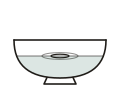
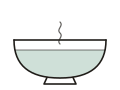
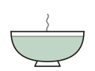
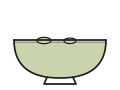
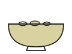
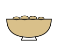
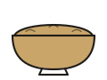
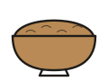
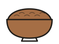
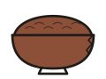

The Way Back to the Table
A 0–10 scale of how hard each food works your stomach, for easing back after a stomach bug.
General guidance, not medical advice. Children, older adults, pregnant people and anyone with an ongoing health condition should check with a doctor sooner.
0 is the easiest on a sore gut and 10 is the hardest. Stay between 0 and 3 at first, then climb as you feel better.
Fluids only. Small, steady sips.

The first plain foods back.

Soft, plain and simple.

Light protein, very little oil.

Normal home cooking.

Everyday meals.

Richer, more fat or more fibre.

Rich, fatty or gassy.

Tough on any gut.

Real stomach trouble.

Avoid while recovering.
Top ten preparation tips
General food-safety guidance, not medical advice.
- 1Cool leftovers and get them into the fridge within 2 hours, or within 1 hour on a very hot day.
- 2Reheat leftovers until they're steaming hot all the way through, and reheat them only once.
- 3Treat cooked rice with extra care: spread it out to cool fast, eat it within a day, and reheat it thoroughly. Rice left warm can grow Bacillus cereus, whose toxin survives reheating.
- 4Keep a separate cutting board and knife for raw meat, poultry and seafood.
- 5Skip ice from unknown sources. Factory-made ice in sealed bags is the safer choice.
- 6Wash fruit, vegetables and fresh herbs under running water, even ones you'll peel.
- 7Thaw frozen food in the fridge, never on the counter.
- 8Keep the fridge at 4°C or colder.
- 9Wash your hands with soap for 20 seconds before cooking, after touching raw meat, and before eating.
- 10When in doubt, throw it out.
Judging a restaurant or stall
- High turnover: busy places sell food before it sits.
- Food cooked to order and served hot.
- Raw and cooked food kept apart.
- Food kept covered, away from flies and dust.
- Clean hands, utensils and tongs.
- No cooked food sitting out in the heat.
- A posted hygiene certificate, such as Thailand's Clean Food Good Taste sign.
Movement, Exercise and the Gut
General coaching guidance, not medical advice.
Lying still vs. gentle walking after meals
- Lying flat right after eating makes reflux and that heavy, nauseous feeling more likely. Stay upright, or propped up on pillows, for about 2–3 hours after a meal.
- A gentle 10–15 minute walk after eating helps the stomach empty and eases gas and bloating. Keep it to an easy stroll.
- Long stretches of lying around slow gut movement (constipation, bloating) and stiffen the upper back. Take short walks and do a few stretches every hour or two.
How soon to swim or row after eating
- After a small snack (banana, yogurt, toast), wait 30–60 minutes.
- After a full meal, wait 2–3 hours.
- Swimming keeps you horizontal and puts water pressure on the belly. Rowing folds you forward and squeezes the abdomen at the catch. Both need an emptier stomach than walking.
Exercise-induced nausea
- Intensity: hard efforts divert blood from the gut, while talking-pace work rarely causes nausea.
- Dehydration is a big trigger, especially in Thailand's heat or after a sauna. Sip water with electrolytes before and during training.
- Training on an empty stomach at dawn can cause queasiness. Have half a banana 30–60 minutes before.
- An overfull stomach or big gulps of water mid-session can also trigger it. Take small sips.
Ramp-back plan after a stomach bug
Move up a stage only after about 24 hours with no vomiting, normal eating and drinking, and no dizziness. Stay at talking pace, and drop back a stage if symptoms return.
- 1Stage 1
Walks after meals, upper-back and hip stretches, fluids with electrolytes. No sauna. - 2Stage 2
An easy 15–20 minute swim with lots of rest, or a 15–20 minute very easy technique row. - 3Stage 3
Back to 30-minute swims and 30-minute steady rows, with light 2x10 weights. Short sauna sessions only if fully hydrated. - 4Stage 4, about a week after symptoms clear
The normal plan.
See a doctor if fluids won't stay down, if there's blood in vomit or stool, a high fever, severe belly pain, signs of dehydration (very dark urine, dizziness), vomiting that lasts more than a day or two, or diarrhoea that lasts more than a few days.